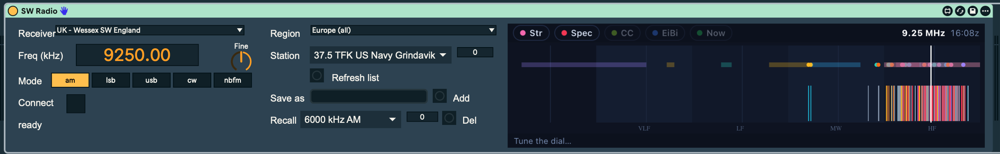
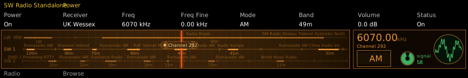
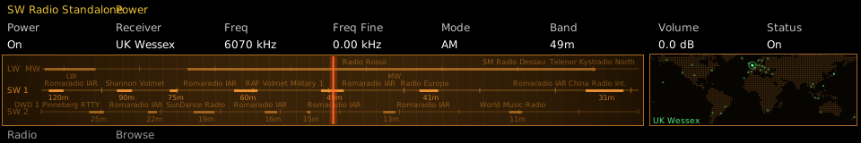
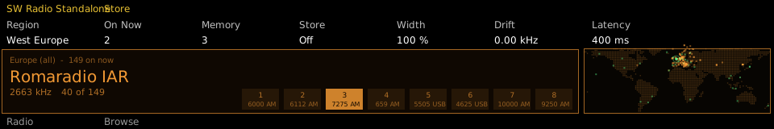

09
sw radio
Tunes a KiwiSDR shortwave receiver anywhere in the world from inside Live, and now from Push 3 standalone, with a 1950s radiogram dial on Push's screen.




about
A Max for Live device can't carry live audio in from the internet, so this is a controller: it launches KiwiSDR's kiwiclientd in the background, which plays the radio audio into the free BlackHole virtual audio device. Live records that as an input. Frequency and mode change live over rigctl — no restart, no gaps. Only changing server restarts the stream. SW Radio Standalone, a separate device (see below), has no Mac parts at all: it talks to the receiver itself and the radio comes out of the device like an instrument, so it runs on Push 3 standalone, with its own picture on Push's screen.
- type
- audio effect
- built by
- claude
- state
- working
- standalone version
- SW Radio Standalone v0.3c
- standalone folder
- SW Radio Standalone Device
- push screen
- Live 13 / Max 9.2
- folder
- SW Radio Device
quick start
- 01One-time: run
SW Radio - SETUP.command(installs the Python packages andkiwiclientinto~/SWRadio), and install BlackHole from existential.audio/blackhole. - 02In Live: Preferences → Audio → Input Device =
BlackHole 2ch. On the track: Audio From = Ext. In 1/2, Monitor = In, armed. - 03Drop
SW Radio.amxdon that track. Pick a Receiver — this fills in the server and port for you. - 04Pick a Mode, set the Freq, then flick Connect on. The status line reads ready → connecting → connected.
- 05Tune live. Switching receiver while connected re-tunes automatically.
controls
tuning
- Receiver37 curated KiwiSDRs
- Public receivers around the world — UK, Europe, Africa, Asia, Oceania, the Americas. The list is long for redundancy; if one is silent, pick another.
- Freq0 – 30000 kHz
- The frequency, in kHz.
- Freq Finerelative dial
- A spring-back fine-tune encoder — rests at centre, never hits an end stop.
- ModeAM / LSB / USB / CW / NBFM
- Demodulation mode.
- Connectoff / on
- Starts and stops the background client.
- Region36 regions
- Which target region the what's on now list is built for — Europe, Africa, Asia, the Americas, Global and their sub-regions.
- Stationbrowse encoder
- Steps through the broadcasts on the air right now beamed at that region, from the EiBi shortwave schedule. Picking one tunes frequency and mode. The readout shows e.g. "West Europe: 41 on now".
- Refresh listbutton
- Re-downloads the EiBi season file. It's cached in
~/SWRadio/eibi/and re-downloaded automatically when more than a week old; the on-now filter re-runs every 5 minutes. - Favourite0 – 32
- Recall a saved favourite — each stores frequency and mode.
workflow
favourites
Type an optional name and press Add to save the current Freq and Mode (blank auto-names it, e.g. "9250 kHz AM"). The Recall menu loads one and retunes live if connected; Del removes the selected one. They live in ~/SWRadio/favourites.json — hand-editable to rename or reorder.
editing the receiver list
The drop-down is built from the SERVERS array near the top of swradio.js, and the first entry is the default. Because the menu is a Push-controllable Live parameter (a fixed list), changing that array means re-running build_patch.py — reloading the JS isn't enough.
troubleshooting
Open the Max window — the device prints [SWRadio] and [kiwi] lines including the exact command it ran. Status stuck on "connecting" = wrong host/port or the receiver is full. No audio = check kiwiclientd found the sound device name and that Live's track input matches. "spawn failed" = PYTHON_BIN / KIWI_DIR paths are wrong.
gotchas
- The folder's README predates the Region / Station "what's on now" browser and still calls the KiwiSDR picker Station. On the current device face that picker is Receiver, and Station is the schedule browser.
- Keep
SW Radio.amxdandswradio.jsin the same folder. - Config lives at the top of
swradio.js:PYTHON_BIN(python3),KIWI_DIR(~/SWRadio/kiwiclient),SND_DEVICE(BlackHole 2ch),RIGCTL_PORT(6400). - To use a BlackHole variant (e.g. 16ch), edit
SND_DEVICEor send the device adevice <name>message.
rebuilding
python3 build_patch.py rebuilds the device. Required after any change to the SERVERS array, since the receiver menu is a fixed-list Live parameter.
standalone version
what it is
SW Radio Standalone.amxd (in SW Radio Standalone Device/) is a rebuild for Push 3 standalone. The original needed a Python program and BlackHole on the Mac; this one connects to the KiwiSDR directly from a node.script inside the device, and the radio is the device's own audio output. Put it on an audio track and switch Power on. Everything is embedded, nothing sits beside it.
getting it onto push
Use it in a Set on the Mac and send that Set to Push, or drag the device onto Push in Live's browser. It loads no samples, so the standalone sample-loading limit doesn't apply.
recording it
The radio is the device's output, so arming its own track won't record it. Record it on a second audio track with Input Type = the radio track, Post FX (Push's resampling route).
status
Confirmed working on Push 3 standalone (19 Nov 2026), and the screen confirmed on Push (18 Nov).
standalone controls
radio bank
- Poweroff / on
- Connects and disconnects. Turns itself off if the connection fails after trying other receivers, so check Status.
- Receiver37 KiwiSDRs
- The same receivers as SW Radio, UK Wessex first. Changing it while on reconnects. A full, down or silent receiver hands over to the next in the list by itself (up to 8 tries), and Receiver follows.
- FreqkHz, 1 kHz steps
- Coarse tuning.
- Fine0.01 kHz steps, endless
- Added to Freq. Past 1 kHz either way the whole kHz moves into Freq, so you can keep turning. Use it for SSB and CW.
- ModeAM, AM-N, SAM, LSB, USB, CW, FM
- CW plays the signal as a 500 Hz tone.
- BandLW, MW, 120m - 11m
- Jumps to the start of a broadcast band.
--does nothing. - VolumedB
- Output gain (receivers apply their own AGC).
- Statusread-only
- Off, Connecting, On, No network, Busy, No answer, Closed, Time limit.
browse bank
- Region / On NowEiBi regions / 1, 2, 3 ...
- Pick a region, then turn On Now to step through what's broadcasting there right now, in frequency order, one station per encoder click. Each step retunes. The list refreshes every 5 minutes from eibispace.de.
- Memory / Store8 slots
- Turning Memory tunes to that slot; Store saves what you're tuned to into it. Saved with the Set.
- Width20 - 120 %
- Passband width, relative to the receiver's normal width for the mode.
- DriftkHz
- Slowly wanders the tuning by up to this much, for evolving textures. 0 = off.
- Latencyms (default 400)
- Audio held in reserve. Raise it if the sound drops out on weak Wi-Fi.
standalone push 3
encoders read left to right. slots marked “–” are intentionally empty.
Buttons from slot 2: Screen is button 3 in both banks and switches between the radiogram picture and Push's normal view.
push 3 screen
radio bank
A backlit amber radiogram dial with three scales (LW/MW, SW 2-10 MHz, SW 10-30 MHz), the broadcast bands, and the names of stations on air now at their place on the scale, each with a tick at its exact frequency. A red needle glides to the frequency. As you tune towards a named station its name, tick and lamp glow brighter, fully lit when you're on it, and the name shows under the big frequency. On the right: frequency, receiver and status, a rolling mode drum, a magic-eye signal meter with an S-unit reading (S9 = -73 dBm), and a round scope of the sound, delayed by Latency so it matches what you hear. The glow warms up at switch-on, throbs gently, and flickers while connecting.
touching receiver
The right panel becomes a world map with the receivers in green and the current one ringed. Receiver positions come from each receiver's own GPS, read weekly and cached; until then they're approximate.
browse bank
The On Now station large, with its frequency and place in the list; the 8 memories as radiogram keys; and the map with the transmitters of what's on now in amber (positions from EiBi's transmitter-site list).
what it needs
Live 13 with Max 9.2 or later. Custom Push graphics are a Live 13 beta feature, so Ableton may still change how they work. The radio itself works without the screen.
standalone gotchas
- The Mac face shows extra readouts (signal, buffer, station name, memory contents); on Push those live in the screen picture instead.
- Receivers limit how long you can listen (Status reads Time limit) and how many people can connect (Busy); the device moves on to another receiver by itself when one is full.
- Rebuilding:
python3 build_swr_standalone.pyinSW Radio Standalone Device/(needs thePush Screen Kitfolder beside it). Receivers, bands, modes, regions and default memories are read from the node script and built into the Push menus, so edit those lists, then rebuild.